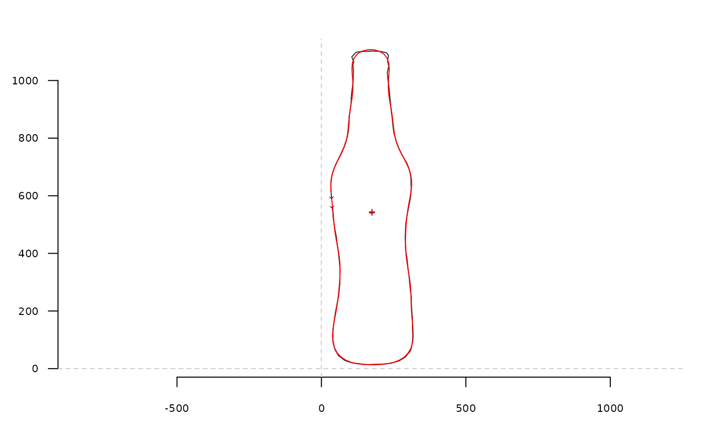

efourier computes Elliptical Fourier Analysis (or Transforms or EFT)
from a matrix (or a list) of (x; y) coordinates. efourier_norm normalizes Fourier coefficients.
Read Details carefully.
Usage
efourier(x, ...)
# Default S3 method
efourier(x, nb.h, smooth.it = 0, ...)
# S3 method for class 'Out'
efourier(x, nb.h, smooth.it = 0, norm = TRUE, start = FALSE, ...)
# S3 method for class 'list'
efourier(x, ...)
efourier_norm(ef, start = FALSE)Arguments
- x
A
listor amatrixof coordinates or aOutobject- ...
useless here
- nb.h
integer. The number of harmonics to use. If missing, 12 is used on shapes; 99 percent of harmonic power on Out objects, both with messages.- smooth.it
integer. The number of smoothing iterations to perform.- norm
whether to normalize the coefficients using efourier_norm
- start
logical. Forefourierwhether to consider the first point as homologous; forefourier_normwhether to conserve the position of the first point of the outline.- ef
listwitha_n,b_n,c_nandd_nFourier coefficients, typically returned by efourier
Value
For efourier, a list with components: an, bn, cn, dn harmonic coefficients, plus ao and co.
The latter should have been named a0 and c0 in Claude (2008) but I (intentionnaly) propagated the error.
For efourier_norm, a list with components: A, B, C, D
for harmonic coefficients, plus size, the magnitude of the semi-major axis of the first
fitting ellipse, theta angle, in radians, between the starting and the semi-major axis
of the first fitting ellipse, psi orientation of the first fitting ellipse, ao and do, same as above,
and lnef that is the concatenation of coefficients.
Details
For the maths behind see the paper in JSS.
Normalization of coefficients has long been a matter of trouble,
and not only for newcomers. There are two ways of normalizing outlines: the first,
and by far the most used, is to use a "numerical" alignment, directly on the
matrix of coefficients. The coefficients of the first harmonic are consumed
by this process but harmonics of higher rank are normalized in terms of size
and rotation. This is sometimes referred as using the "first ellipse", as the
harmonics define an ellipse in the plane, and the first one is the mother of all
ellipses, on which all others "roll" along. This approach is really convenient
as it is done easily by most software (if not the only option) and by Momocs too.
It is the default option of efourier.
But here is the pitfall: if your shapes are prone to bad aligments among all
the first ellipses, this will result in poorly (or even not at all) "homologous" coefficients.
The shapes particularly prone to this are either (at least roughly) circular and/or with a strong
bilateral symmetry. You can try to use stack on the Coe object
returned by efourier. Also, and perhaps more explicitely, morphospace usually show a mirroring symmetry,
typically visible when calculated in some couple of components (usually the first two).
If you see these upside-down (or 180 degrees rotated) shapes on the morphospace,
you should seriously consider aligning your shapes before the efourier step,
and performing the latter with norm = FALSE.
Such a pitfall explains the (quite annoying) message when passing efourier with just the Out.
You have several options to align your shapes, using control points (or landmarks),
by far the most time consuming (and less reproducible) but possibly the best one too
when alignment is too tricky to automate.
You can also try Procrustes alignment (see fgProcrustes) through their calliper
length (see coo_aligncalliper), etc. You should also make the first
point homologous either with coo_slide or coo_slidedirection
to minimize any subsequent problems.
I will dedicate (some day) a vignette or a paper to this problem.
Note
Directly borrowed for Claude (2008).
Silent message and progress bars (if any) with options("verbose"=FALSE).
References
Claude, J. (2008) Morphometrics with R, Use R! series, Springer 316 pp. Ferson S, Rohlf FJ, Koehn RK. 1985. Measuring shape variation of two-dimensional outlines. Systematic Biology 34: 59-68.
See also
Other efourier:
efourier_i(),
efourier_shape()
Examples
# single shape
coo <- bot[1]
coo_plot(coo)
ef <- efourier(coo, 12)
# same but silent
efourier(coo, 12, norm=TRUE)
#> $an
#> [1] -143.1142910 5.2925309 22.9922936 -11.3596452 -14.9412217
#> [6] -5.4200881 5.7177112 0.4509076 0.3107020 -3.1633079
#> [11] 0.2814646 3.4927761
#>
#> $bn
#> [1] -13.8501141 -21.8994092 11.4235084 13.5870435 -12.6401807 2.5050679
#> [7] 5.1968464 -0.5366171 -1.0431706 1.0823659 2.3427969 0.1022387
#>
#> $cn
#> [1] 64.44753053 -3.15375656 -17.96822626 5.76052596 7.17390949
#> [6] -2.98410094 -1.20013013 1.18299684 -0.36305436 -0.46782525
#> [11] 0.67134872 0.08954658
#>
#> $dn
#> [1] -484.90299209 -1.04774048 42.07408510 3.40654863 -9.19128141
#> [6] -2.99359284 0.96722479 2.22582484 0.02026172 -2.26134728
#> [11] -0.04679906 0.80569603
#>
#> $ao
#> [1] 349.02
#>
#> $co
#> [1] 1080.921
#>
# inverse EFT
efi <- efourier_i(ef)
coo_draw(efi, border='red', col=NA)

# on Out
bot %>% slice(1:5) %>% efourier
#> 'norm=TRUE' is used and this may be troublesome. See ?efourier #Details
#> 'nb.h' set to 10 (99% harmonic power)
#> An OutCoe object [ elliptical Fourier analysis ]
#> --------------------
#> - $coe: 5 outlines described, 10 harmonics
#> # A tibble: 5 × 2
#> type fake
#> <fct> <fct>
#> 1 whisky a
#> 2 whisky a
#> 3 whisky a
#> 4 whisky a
#> 5 whisky a